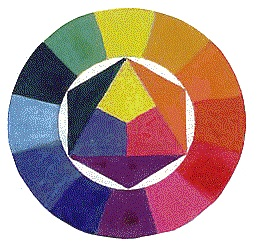

What is Your Favorite Color?
姓名：吳暢
Name：Tony Wu
年齡：20

Now
Recent Favorite Movies
- Spy Bridge
- Rogue One: A Star Wars Story
- Miss Sloane, TBD...
Favorite Series
- Friends
- HIMYM
Or perhaps others...
- Modern Family
- The Big Bang Theory
- Broklyn Ninenine
- Two Broke Girls
- Community
- Baby Daddy
- Last Man Standing
- GoT
- Sherlock
- Life in Pieces
- Scorpion
本學期課表
Top